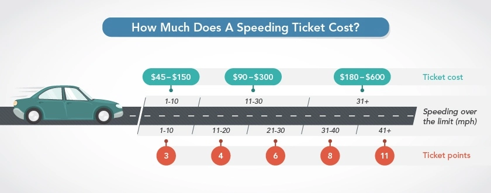

If you drive at mph
and your destination is within miles,
you
will reach your destination in minutes.
If your speed limit is mph and you want to reach in
minutes , you need to drive at
mph.
Being over mph.
There is about % chance
of getting a speed ticket, worth USD .
 Source: New York Speeding Fines
That being said, if you earn $/hr, which is
$/min, you will need to work
minutes to pay for the ticket.
Or, you can take the % risk
of getting a USD speed ticket and save minutes.